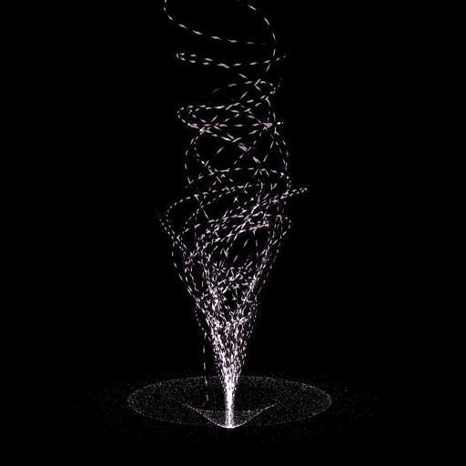
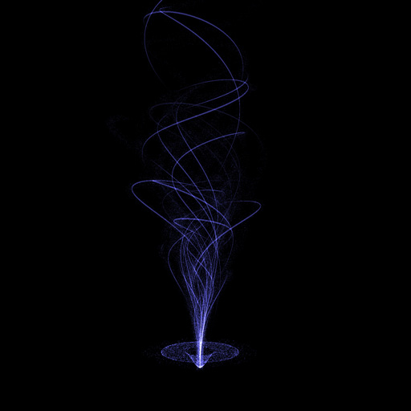
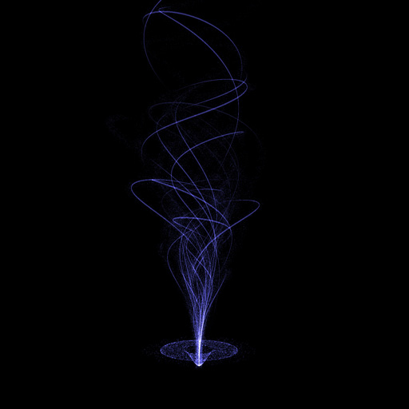

Inspiration
I recently start living in Japan and illumination for winter are beautiful here. Everywhere you go, you can only be enchanted by it and after I finished my first christmasxp "Journey" I wanted to make my own digital version of illuminated tree.
The ground
I wanted to use Particle to represent the ground. For performance issue everything is directly managed in the vertex shader and each particle has 3 attributes: with vector direction given by 2 angles: Phi & Theta.
float t = (time+aTime)/100.;
float theta = aAngle.y + aTime;
float phi = aAngle.x + sin(aSpeed*t)*.5;
pos.x = aAngle.z * sin( phi ) * cos( theta ) * radius;
pos.z = aAngle.z * sin( phi ) * sin( theta ) * radius;
pos.y = smoothstep(0., dist, distance(pos,vec3(0.))) * height;
dist
height
radius
Create the shape with line
A line is made of points connected togethers and there is many ways to create interesting shape. I was thinking about 3d bezier line but I tested a more simple approach with vector direction give by 2 angles: Phi & Theta.
By adding an epsilon phi / theta to the previous vector, move in this direction & repeat it X times I get interesting shape, close from my sketch, so I keep it.
function createShape(epsilonTheta,epsilonPhi,radius) {
var steps = 150
var positions = new Float32Array( steps*3 )
var z = 0, x = 0, y = .5, phi = 0, theta = Math.PI*2*Math.random()
for(j=0; j < steps*3; j+=3){
positions[ j ] = x
positions[ j + 1 ] = y
positions[ j + 2 ] = z
x += radius * Math.sin( phi ) * Math.cos( theta )
y += radius * Math.cos( phi )
z += radius * Math.sin( phi ) * Math.sin( theta )
phi += epsilonPhi
theta += epsilonTheta
}
return positions
}
To represent the line I used MeshLine from @thespite and I'm globally very satisphied even if animation part was tricky as we will see after. The basic idea was to create the different branch and making change a bit the parameters from one to another, try it!
epsilon phi
epsilon theta
radius
Animate the line
Then I wanted to animate the line, but I got performance issues. I realized it came from the process function of MeshLine witch update all the attributes & recreate the buffer, even optimized/modified to reuse the same buffer & update only prev/next/position attributes it was still too heavy, especially on mobile. So instead of changing the attribute I modified the MeshLineMaterial Shader,added a uniform time & used the width variable as a time offset and not directly as a width.
I also played with smoothstep & uv to reduce the width at the start & end of the line.
//- w is the width
float w = 1.8 * pixelWidth * lineWidth * sin(width+time)*(1.-smoothstep(.9,1.,uv.x*1.));
w *= smoothstep(uv.x*2.,uv.y*2.+2.,-time*2000.);
& the width is given by this formula :
line.setGeometry( geometry,function(p){ return p*division })
deltaSpeed
division
Making the particles on the tree
My next step was to add particles on the three, I push particles on it by getting a random position on the line using linear interpolation & adding positionOffset to particles.
Show particle only
Well.. Again make it move was much more tricky :D
I couldn’t set their position anymore with javascript for performance issue, so I did it in the vertex shader by passing the line path ( the array of points composing the line ) as a uniform and a aTime as attribute on each particle. The problem I encountered is the limit of the number of uniforms in a vertex shader ( apparently 512 ). To avoid it I simplify the line path by using less points.
The exact number of point use was set in javascript and add dynamically as uniforms at the start of my shader. Its now between 100 to 200points.
float t = (time+aTime*50.)/80.;
float i = mod(t, pathLength)+1.;
float percent = i/pathLength;
float extra = mod(i,1.);
//- current index on path
int ii = int(floor(i));
//- linear interpolation with the previous point on path
pos = (1.-extra)*path[ii-1] + extra*path[ii];
//- reduce the offset position on the end so it converge to the same point ( but still 40% different )
pos += aOffset*(1.4-smoothstep(0.9, 1., percent));
Made the particle disappear smoothly at the end
alpha *= 1.-smoothstep(0.98, 1., percent);
Appear/Disapear/Optimisation
To made it appear / disappear like its coming from the ground, I play with the alpha and add a “hide” variable to control it. Also I inverse & accelerate the delta time when it should hide so it feel the line are coming back. Finally I make the branch coming one by one every 50ms so its softer than all appear together and also more interesting.
Anim in/out
About optimizing : I clean the shader of particles / line, remove all depth test, use pool objects, reduce the number of particles/line/points by line on mobile.
Conclusion
 

I'm happy with the visual result of this experiment & I have fun experimenting with Meshline.
In a technical point of view I learn the uniform limit, particle animation along a path and how to optimize meshline for repeatable movement. This last point is not super friendly but the change is worth it.
Some link if you wish to learn more about MeshLine & Shaders:
Thank you for reading, if you like it, what about Tweeting it & stay tunes with twitter!
Have fun with MeshLine!
FIN